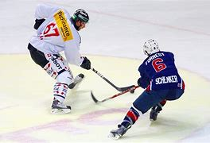
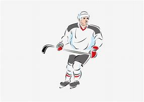
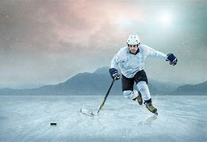
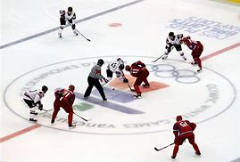
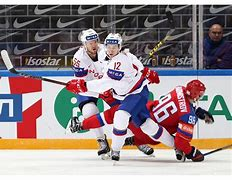

hoquei-no-gelo
Hóquei no gelo, O que é?
O Hóquei no gelo é um esporte que não é muito conhecido no Brasil, porém é um esporte Reconhecido internacionalmente desde 1920(Rogério ,2021);
Figura 21, hoquei no gelo.
É um esporte que é praticado no gelo, Estranho para nós que vivemos em um país tropical, mais para pessoas que vivem em países que são Caracterizados pela baixa temperatura é muito comum, como no Canadá, na Suécia, na Rússia, na Islândia e no norte dos Estados Unidos(Rogério,2021).
Dimensões da pista de Hóquei no gelo.
O Hóquei no gelo é jogado em uma pista de gelo de 61 m de comprimento por 26 m de largura(Rogério, 2021);
Figura 22, hoquei no gelo.
As Redeste 1,8 m de largura por 1,2 m de altura. O disco é de borracha vulcanizada com 2,5 cm de Espessura por 7,6 cm de diâmetro e pesa cerca de 170 gramas. Os discos são congelados antes do Jogo e mantidos num refrigerador para que não quiquem(Rogério, 2021).
História do Hóquei no gelo.
O Hóquei no gelo surgiu no Canadá como modificação no Hóquei sobre a grama(Rogério, 2021);
Figura 23, hoquei no gelo.
Os soldados Britânico fizeram os primeiros jogos sobre lagos e rios congelados nos rigorosos invernos Canadense(Rogério, 2021);
O primeiro jogo praticado em local fechado só foi acontecer em 1875 em Montreal(Rogério, 2021);
Só Depois de dois anos, foram feitas as regras para este esporte. Algumas adaptações foram feitas com(Rogério, 2021);
A troca de campo pro gelo e a troca da bola de borracha por um disco de madeira(Rogério, 2021).
Objetivo
O objetivo do Hóquei no gelo é fazer o maior número de gols, durante os três tempos de jogo, caso ocorra empate a disputa vai para os pênaltis(Rogério,2021).
Figura 24, hoquei no gelo.
Regras
- Três períodos de 20 minutos cada(RONDINELLI, 2012);
- O cronômetro é pausado quando o disco sai de jogo ou o árbitro interrompe a partida em virtude de uma infração (RONDINELLI, 2012);
- Cada equipe tem direito a um pedido de tempo (timeout) de 30 segundos durante o jogo, que pode (RONDINELLI, 2012);
- Ser solicitado quando a partida for interrompida (RONDINELLI, 2012);
- Se os bancos de reserva ficarem na mesma lateral da pista, cada equipe começa a partida (RONDINELLI, 2012);
- Defendendo o gol mais próximo ao seu respectivo banco (RONDINELLI, 2012);
- Se os bancos de reserva ficarem em laterais opostas da pista, a equipe da casa escolhe qual gol (RONDINELLI, 2012);
- Deseja defender no primeiro período (RONDINELLI, 2012);
- Ao final de cada período, as equipes trocam o gol que defendem para a disputa do próximo período (RONDINELLI, 2012);
- Todos os períodos são iniciados com um face-off no ponto central da pista (RONDINELLI, 2012);
- Seis jogadores para cada time (RONDINELLI, 2012);
- 13 jogadores reservas de linha, e dois goleiros (RONDINELLI, 2012);
- Substituições ilimitadas, podem ser feita com a partida em andamento, desde que o jogador substituto entre na pista após o jogador substituído já tenha deixado a pista (RONDINELLI, 2012).
Faltas leves:
Ocorre quando um jogador:
Figura 25, hoquei no gelo.
- Utiliza indevidamente o bastão (atinge ou tenta atingir propositalmente o adversário, atinge acidentalmente um oponente acima dos ombros ou arremessa o bastão) (RONDINELLI, 2012);
- Agarra um adversário (RONDINELLI, 2012);
- Atinge um adversário abaixo dos joelhos (RONDINELLI, 2012);
- Acerta uma cotovelada ou joelhada (RONDINELLI, 2012);
- Utiliza equipamentos fora dos padrões estabelecidos pela liga (RONDINELLI, 2012);
- Segura o disco com as mãos (RONDINELLI, 2012);
- Causa atrasos na partida deliberadamente (RONDINELLI, 2012);
- Sendo goleiro, ultrapassa a linha central que divide a pista (RONDINELLI, 2012);
- Simula uma queda para tentar induzir uma falta (RONDINELLI, 2012);
- Impede o goleiro de realizar uma defesa, empurrando-o ou encostando nele. Bloquear o campo de visão do goleiro adversário com o corpo não é considerado falta (RONDINELLI, 2012).
Faltas pesadas:
São faltas mais graves que as menores, que podem causar lesões nos adversários:
- Atingir um adversário com a lâmina do bastão (RONDINELLI, 2012);
- Empurrar um adversário pelas costas, resultando em uma lesão (RONDINELLI, 2012);
- Acertar uma cotovelada ou joelhada que cause uma lesão no adversário (RONDINELLI, 2012);
- Atingir um adversário abaixo dos joelhos, resultando em uma lesão (RONDINELLI, 2012);
- Atingir um adversário pelo seu lado “cego” (RONDINELLI, 2012);
- Empurrar violentamente um adversário que esteja de frente para o vidro que contorna a pista (RONDINELLI, 2012);
- Acertar uma cabeçada no adversário propositalmente (RONDINELLI, 2012);
- Começar ou participar de uma briga (RONDINELLI, 2012).
REFERÊNCIAS
- Rogério, Clube Paulista de Desportos no Gelo [online] – Disponível em: http://www.cpdg.com.br/principal. Acesso em: em 22 de abril de 2023;
- RONDINELLI, Paula. “Hóquei no Gelo”; Brasil Escola. Disponível em: https://brasilescola.uol.com.br/educacao-fisica/hoquei-no-gelo.htm. Acesso em 03 de abril de 2023.